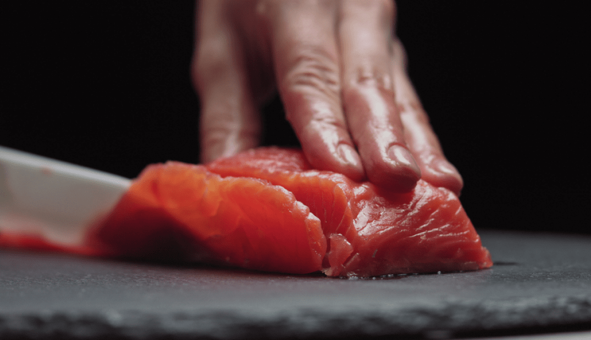
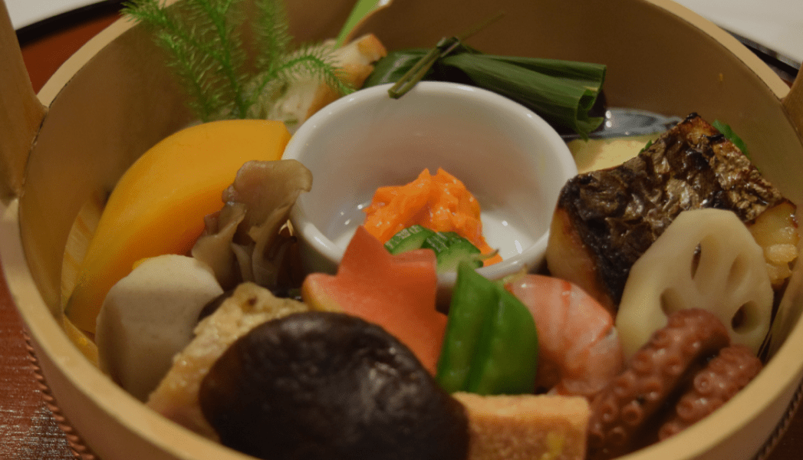

当店では伝統的な京都の味わいを
大切にし
、季節の恵みを活かした
料理を提供しています。
雅な空間と厳選された食材と共に
ご家族やご友人と、くつろぎのひ
と時をお過ごしください。
京料理の伝統
こだわりの庭
おもてなしを。
こだわり
commitment
-

01
季節の恵みを活かした
厳選食材京都の四季折々の豊かな自然から得られる季
節の恵みを厳選し、お料理に活かしておりま
す。
新鮮な食材を用いて、伝統の味わいと季節の
風情をお楽しみいただけます。
美味と健康を兼ね備えた料理を心を込めてご
提供いたします。 -
02
繊細な盛り付けと
美しい器での提供繊細な盛り付けと美しい器でお客様に提供し
ております。
京都の美意識を感じさせる雅な器や、彩り豊
かな食材を活かした華やかな盛り付けで、目
でも楽しむ料理体験をお届けします。
料理だけでなく、見た目にも美しいひととき
をお楽しみください。 -

03
伝統の技法と
現代の創意との融合伝統的な京都の技法を踏襲しつつ、現代の創
意を取り入れた独創的な料理です。
伝統の味わいを大切にしながらも、新しいア
プローチでお客様に驚きと喜びを提供します。
雅な雰囲気の中で、伝統と革新が融合した味
わいをお楽しみください。
ご予約
reservation
京都の風情を味わう特別なひとときをお約束します。 お好みの日時と人数をご指定の上、お気軽にご予約ください。ご来店を心よりお待ちしております。